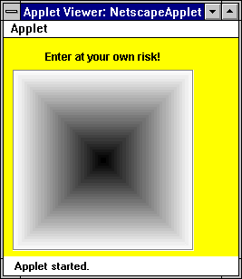
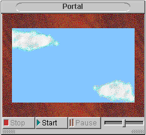
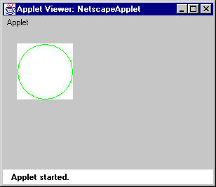
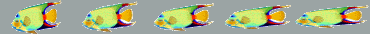

Image or Bitmap class. An animation is simply a collection of images displayed in rapid succession to create the illusion of continuous movement or changes.
The IFC provides the following classes for imaging and working with animations:
Image class is an abstract base class; subclasses of Image represent objects that can draw themselves within an instance of a Rect.
Bitmap class represents bitmaps that can draw themselves within an instance of a Rect.
DrawingSequence class is an abstract subclass of Image; subclasses of DrawingSequence animate a sequence of frames by changing the frame number and drawing the frame.
ImageSequence class animates a sequence of images.
The IFC also provides an interface,
DrawingSequenceOwner, for objects that need to be notified about changes to a drawing sequence. The IFC notifies the class that implements DrawingSequenceOwner about changes to the owned sequence, and the owner then takes the appropriate action.
Image class provides the foundation for imaging and animation in the IFC. Image is an abstract class; the Bitmap class, used for working with bitmaps, and the DrawingSequence class, used for animating frames, are both extensions of Image. The ImageSequence class is a subclass of DrawingSequence that is used specifically for animating images.
Because Bitmap, DrawingSequence, and ImageSequence are all subclasses of image, you have a great deal of flexibility in providing values for methods that take images as an argument. For example, the setImage method lets you specify the image that appears on a button. You can easily specify either a bitmap or an animation for setImage, because Bitmap and ImageSequence are both subclasses of Image.
To create a custom image, subclass Image and provide an implementation for the width, height, and drawAt methods. In addition, if your object is capable of scaling itself, you should implement the drawScaled method.
For example, suppose you want to create a custom Image class to draw a set of concentric rectangles that gradually darken as they move from the edge to the center. Figure 6.2 shows what such an image could look like.
A custom image that draws concentric rectangles 
Image and creates the TunnelImage class, which draws this set of concentric rectangles:
public class TunnelImage extends Image {
In this example, the
int width, height;
public TunnelImage(int width, int height) {
this.width = width;
this.height = height;
}
public void drawScaled(Graphics g, int x, int y,
int width, int height) {
Rect rect; // The drawn rectangle
int gray; // Current gray shade
float interp; // Used for interpolating the grays
float increment; // Gray adjustment increment per rectangle
rect = new Rect(x, y, width, height);
interp = 1.0f;
increment = 1.0f / (float)(Math.max(width, height) / 2);
while ((rect.width > 0) || (rect.height > 0)) {
gray = (int)(interp * 255.0f); // compute the current gray level
interp -= increment;
g.setColor(new Color(gray, gray, gray)); // reset the color
g.drawRect(rect);
rect.growBy(-1, -1); // shrink the rectangle
}
}
public void drawAt(Graphics g, int x, int y) {
drawScaled(g, x, y, width, height);
}
public int width() {
return width;
}
public int height() {
return height;
}
}drawScaled method performs the actual drawing work, and the drawAt method simply calls drawScaled. The while loop within drawScaled calculates the current gray value, resets the color to a slightly darker gray, draws a rectangle, and then shrinks the next rectangle by one pixel. The width and height methods return the dimensions used by the TunnelImage constructor.
The Image class also provides the drawCentered method to draw an image centered within a specified rect object, and drawTiled to tile an image within a specified rect object.
Displaying images
Any view can display an image. For convenience, the root view and IFC components that commonly display images, such as button, container view, and list item, provide the setImage method; the Slider class uses setImage to specify the image the slider displays within its groove. Use setImage to specify an image for the component to display.
For example, you can use a container view to display the TunnelImage image described in "Working with images" on page 60 as follows:
containerView = new ContainerView(10, 35, 200, 200);
The
containerView.setImage(tunnelImage);
mainRootView().addSubview(containerView);RootView, ContainerView, and Slider classes also provide the setImageDisplayStyle method, which lets you specify whether the image should be centered, tiled, or scaled. The button component lets you specify the relationship between an image and the button title with the setImagePosition method.
You can also use a custom view to display an image. For example, you can use a View subclass such as TunnelImageView, shown below, to display the TunnelImage object described in "Working with images" on page 60:
public class TunnelImageView extends View {
In this example, the
TunnelImage tunnelImage;
public TunnelImageView(int x, int y, int width, int height) {
super(x, y, width, height);
tunnelImage = new TunnelImage(width, height);
}
public void drawView(Graphics g) {
tunnelImage.drawAt(g, 0, 0);
}
}TunnelImageView constructor instantiates the TunnelImage, and the drawView method specifies how to display the TunnelImage.
Bitmap class, an extension of Image, provides support for working with bitmaps. Use the bitmapNamed method of Bitmap to specify and load a bitmap. For example, the following code loads the data in the file fish.gif immediately:
Bitmap.bitmapNamed("fish.gif");
You can also specify a boolean argument to postpone loading the bitmap data until its information is needed. For example, you can postpone loading the data until the bitmap's width or height is needed, or until the bitmap needs to draw itself onscreen:
Bitmap.bitmapNamed("fish.gif", false);
By default, the IFC looks for bitmaps in the images subdirectory directly beneath the code base directory. For example, if the code base for an application is the fishApp directory, the previous examples look for fish.gif in the fishApp/images directory.
You can also use the bitmapNamed method to specify locations relative to the images subdirectory. For example, the following code looks for flounder.gif in the fish subdirectory of images:
bitmap = Bitmap.bitmapNamed("fish/flounder.gif");
Use the bitmapFromURL method to load a bitmap from any URL.
Because bitmaps are images, you display them in a view as described in "Displaying images" on page 62. For example, the following code displays a bitmap to the left of the title on a button, as shown in Figure 6.3.

stopButton.setTitle("Stop")
Bitmaps displayed on Buttons
stopButton.setImage(Bitmap.bitmapNamed("stop.gif"));
stopButton.setImagePosition(Button.IMAGE_ON_LEFT);
DrawingSequence class is the foundation for animation support in the IFC. DrawingSequence is an abstract subclass of Image; subclasses of DrawingSequence animate a sequence of frames. The ImageSequence class, used for animating images, is another subclass of DrawingSequence.
A drawing sequence is a set of frames that is displayed one at a time at a specified rate. The current frame number determines the image that the sequence draws. Depending on the direction of the sequence, the frame number is incremented or decremented to display the next frame.
For example, suppose you want to display a green circle within a white rectangle. The green circle should grow until it reaches the boundary of the white rectangle, and then shrink in successive steps until it disappears, before starting its animation again.
You could define the green circle and the way it draws in a DrawingSequence subclass called CircleSequence. You could then define the white rectangle that contains the green circle as a View subclass called CircleView that implements DrawingSequenceOwner.
This simple animation is shown in Figure 6.4. The code that defines CircleSequence is shown in "Defining the drawing sequence" on page 66, and the code defining CircleView is shown in "Defining the DrawingSequenceOwner" on page 67.
An animated circle 
Implementing a drawing sequence
The following procedure outlines the steps needed to implement an animation with a drawing sequence:
DrawingSequence and override the drawAt method to specify how the sequence will draw itself. See "Defining the drawing sequence" on page 66 for more information.
width and height methods in the class that extends DrawingSequence to specify the dimensions of the animation. See "Defining the drawing sequence" on page 66 for more information.
setFrameRate, setFrameCount, and setPlaybackMode. See "Defining the drawing sequence" on page 66 for more information.
DrawingSequenceOwner in the View subclass that will own the drawing sequence. Provide an implementation for drawingSequenceFrameChanged and drawingSequenceCompleted. See "Defining the DrawingSequenceOwner" on page 67 for more information.
drawView method in the owner and use it to call the drawAt method of the drawing sequence. See "Defining the DrawingSequenceOwner" on page 67 for more information.
DrawingSequence to create a custom class. Override the drawAt method in the custom class to specify how the sequence will draw, then override width and height to specify the size of the sequence.
Call the set-prefixed methods in the constructor of the sequence to specify information about the sequence. For example, setPlaybackMode specifies the direction in which the sequence animates, and setFrameRate specifies the speed of the animation in milliseconds. You must specify the number of frames with setFrameCount, or the sequence will throw an exception.
For example, the following code creates the CircleSequence that draws the green circle animation shown in Figure 6.4:
public class CircleSequence extends DrawingSequence {
In this example,
int width, height;
public CircleSequence(int width, int height,
DrawingSequenceOwner owner) {
super(owner);
this.width = width;
this.height = height;
setFrameRate(100);
setFrameCount(width / 2);
setPlaybackMode(DrawingSequence.BOUNCE);
}
public int width() {
return width;
}
public int height() {
return height;
}
public void drawAt(Graphics g, int x, int y) {
g.setColor(Color.green);
g.drawOval(x + width()/2 - currentFrameNumber(),
y + height()/2 - currentFrameNumber(),
2*currentFrameNumber(), 2*currentFrameNumber());
}
}
width and height simply return the dimensions passed to the constructor when the CircleSequence is initialized. The drawAt method sets the color as green and calls drawOval to draw the circle. The values passed to drawOval change the drawing origin as the frame number changes and increase or decrease the size of the circle based on the frame number.
Defining the DrawingSequenceOwner
Because a DrawingSequence is not a view, it cannot draw itself onscreen. Instead, it notifies its owner when its frame number changes and when the sequence completes. The owner, usually a view, calls the drawAt method of the sequence.
Implement the DrawingSequenceOwner interface to specify an object as the owner of a drawing sequence. DrawingSequenceOwner defines two methods. Specify what action the owner should take when the frame in the sequence changes in the implementation of the drawingSequenceFrameChanged method. Specify what behavior you want to occur when the sequence completes in the drawingSequenceCompleted method.
For example, the following code creates the CircleView class that owns the CircleSequence described in "Defining the drawing sequence" on page 66:
public class CircleView extends View implements DrawingSequenceOwner {
In this example, the owner's constructor instantiates a
CircleSequence sequence;
public CircleView(int x, int y, int width, int height){
super(x, y, width, height);
sequence = new CircleSequence(width, height, this);
sequence.start();
}
public void drawingSequenceFrameChanged(DrawingSequence aSequence) {
draw();
}
public void drawingSequenceCompleted(DrawingSequence aSequence) {
}
public boolean isTransparent() {
return false;
}
public void drawView(Graphics g){
g.setColor(Color.white);
g.fillRect(0, 0, width(), height());
sequence.drawAt(g, 0, 0);
}
}
CircleSequence. The owner redraws the CircleSequence every time a frame changes, and takes no special action when the CircleSequence completes. The drawView method of the owner calls the drawAt method of CircleSequence to draw the sequence.
ImageSequence class is a DrawingSequence subclass that makes it easy to animate a collection of images. Supply the image sequence with a list of images, then use the set-prefixed methods inherited from DrawingSequence to specify features such as a frame rate and a playback direction.
Unlike DrawingSequence, you do not create a custom subclass to define an ImageSequence; instead, you call the ImageSequence constructor and instantiate the ImageSequence as you instantiate a component. Because ImageSequence is a subclass of Image, you can display it in any view, as described in "Displaying images" on page 62.For example, suppose you want to display an animation on a button instead of displaying the static bitmaps shown in Figure 6.3. You can animate the images displayed on these buttons to indicate which button a user selects. When a user clicks a button, a new animation starts, causing the bitmap on the selected button to flash; the animation displayed on any other button stops.
The following code shows how to display an animation on the Pause button illustrated in Figure 6.3:
ImageSequence pauseSequence;
The previous example creates the
Button pauseButton;
static final String PAUSE = "pause";
public void init() {
super.init();
// Add the Pause button
pauseButton = new Button(24, 24, 55, 20);
pauseButton.setTitle("Pause");
pauseButton.setType(Button.TOGGLE_TYPE);
pauseButton.setTarget(this);
pauseButton.setCommand(PAUSE);
pauseButton.setEnabled(true);
// The button's image will be an ImageSequence
pauseSequence = new ImageSequence();
pauseSequence.addImage(Bitmap.bitmapNamed("pause1.gif"));
pauseSequence.addImage(Bitmap.bitmapNamed("pause2.gif"));
pauseSequence.setPlaybackMode(DrawingSequence.FORWARD_LOOP);
pauseSequence.setFrameRate(500);
pauseButton.setImage(pauseSequence);
pauseButton.setImagePosition(Button.IMAGE_ON_LEFT);
mainRootView().addSubview(pauseButton);
}ImageSequence pauseSequence. The addImage method sequentially specifies the images displayed by the sequence. The set-prefixed methods of pauseSequence specify the frame rate and playback direction of the sequence. The setImage method of pauseButton displays the pauseSequence on the button.
To control the animation displayed on pauseButton, implement the Target interface and use its performCommand method, as shown in the following code:
public void performCommand(String command, Object object) {
See "Communication between objects" on page 73 for more information about the
if (PAUSE.equals(command)) {
if (pauseButton.state()) {
pauseSequence.start(); // Start the pause button flashing
}
else {
pauseSequence.stop(); // Stop the pause button flashing
pauseSequence.setCurrentFrameNumber(0);
}
}
}Target interface.
The code in the previous example executes if a user clicks pauseButton, because its setCommand method specifies the PAUSE command string. The state method determines if the button is toggled down or up by the user click. When a user click toggles pauseButton down, the start method runs pauseSequence, and the button appears to flash. When a user toggles pauseButton up, the pauseSequence stops.
Specifying bitmaps for the sequence
You can specify the bitmaps that an image sequence displays in any of the following ways:
addImage method to specify each image individually
addImagesFromName method to specify a starting image for the sequence
setImageStrip method to specify an image strip containing all the images for the sequence
addImage when you have only a few images in an image sequence, because you must call addImage for each image that you want to display. The example in "Creating ImageSequence animations" on page 69 uses addImage to specify the bitmaps for pauseSequence because there are only two bitmaps in the sequence.
The addImagesFromName method is more convenient when you need to use many bitmaps in an image sequence. Make sure the images are numbered sequentially; for example, a three bitmap sequence animating a fish could be fish0.gif, fish1.gif, and fish2.gif. You cannot use bitmaps numbered with a leading 0 character, such as fish01.gif, or bitmaps numbered before the character string, such as 1fish.gif. Specify the first bitmap in the sequence and the total number of bitmaps when you call addImagesFromName, as follows:
fishSequence.addImagesFromName("fish0.gif", 3);
If you use image strips to store your images, you can specify the images in a sequence with the setImageStrip method. Figure 6.5 shows a typical image strip.
Image strip with five bitmaps 
setFrameWidth or setFrameHeight methods. If the image strip is oriented horizontally, as shown in Figure 6.5, call setFrameWidth and specify the width of each image in pixels, as shown in following code:
fishSequence.setFrameWidth(74);
If the image strip is oriented vertically, call setFrameHeight and specify the height of each image.images.